1. TOWN
 Town is your headquarters for adventure!
Town is your headquarters for adventure!
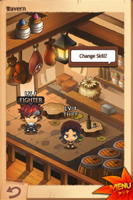
As you work to cure the townspeople's curse, you can use the Shop and Tavern to help you in your adventures.
▪ The Shop sells various equipment and useful items.
▪ Usable items can often be bought and sold in bundles of 10.
▪ While you're off exploring, the Shop will stock new equipment.
▪ Come back between adventures to see what's new!
▪ There's also a rumor that you can find stronger equipment when you clear a dungeon.
▪ Each weapon and armor has unique attributes, so find the ones that fit your style.
▪ At the Tavern, select the character you wish to use and choose your active skills.
▪ Talk to the Master of the Tavern to change skills.
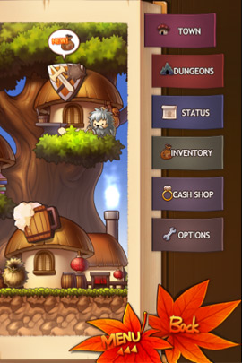
Most importantly of all, get to know the maple leaf menu at the bottom of the screen.
That maple leaf menu will let you enter dungeons, check your status, and change your equipment.
2. DUNGEONS
From Town, you can use the maple leaf menu to enter a dungeon.
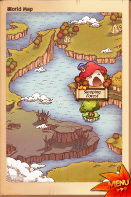
For now, you can only enter the Sleeping Forest. As you adventure, you'll find the way to more dungeons.
A scary boss monster awaits you on the last floor of each dungeon!
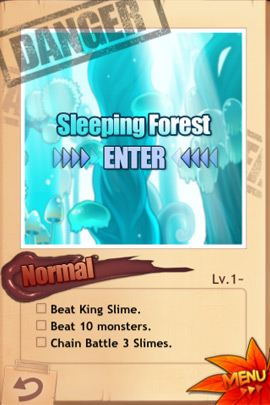
Aside from the boss, each dungeon has three objectives.
▪ You can finish these objectives one-by-one.
▪ If you leave the dungeon before finishing an objective, you must start the objective over again.
▪ For example, let's say you have an objective to beat 10 monsters. If you leave the dungeon after beating only 5,
▪ you'll have to start over from 0 when you return to the dungeon.
▪ Of course, after you complete an objective it's completed forever, even if you leave and re-enter the dungeon later.
▪ Don't worry about completing all 3 objectives in one run. Focus on one at a time and, above all, have fun!
▪ Legends say that heroes who complete all 3 objectives can go deeper into the dungeon to find stronger monsters and weapons...
3. EXPLORATION
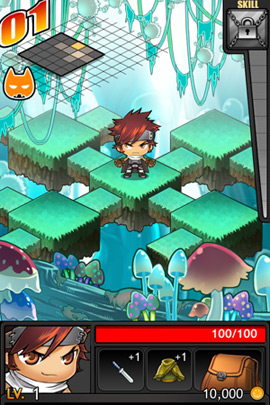
Exploring dungeons is a major part of adventuring.
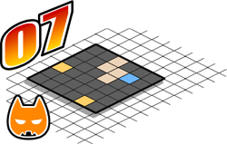
In the top-left corner, you can see your current floor and how close you are to any scary monsters.
▪ You can also see the minimap, which shows you how much you've explored.
▪ On the minimap, yellow rooms have treasure chests, and blue rooms let you go to the next floor.
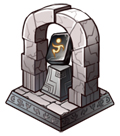
Every 5 floors, the yellow room will have an altar that can warp you back to town instead of a treasure chest.
▪ These altars will give you a magic stone that will warp you back, so be sure to find them, unless you want to start the dungeon over!
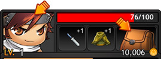
Click on your face on the bottom left to view your stats and skills.
The bag on the bottom right lets you change equipment and use items.
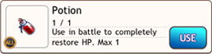
Make sure you heal up between battles. Nothing's worse than skipping a turn in battle because you had to stop and eat a pizza!
4. BATTLE
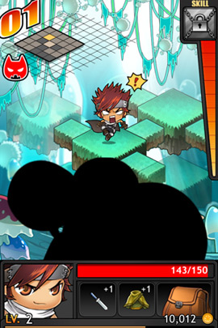
Whenever you find a monster while exploring, you enter battle.
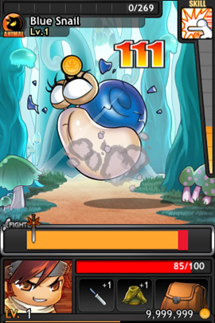
You and the monsters take turns attacking each other.
▪ Attack when the moving sword is in the yellow to land a successful attack.
▪ If you're feeling bold, attack while the sword is in the red to land a critical hit.
▪ I hear you get more money when you do critical hits. It's a win-win! Except for the monster. He doesn't win.
▪ But be careful! If you attack when the sword is in the black, your attack will just miss.
▪ The bar varies from enemy to enemy. Sometimes there's a section that instantly beats the monster, but sometimes there's a section that makes him counterattack.
Your current skill appears in the top right.
▪ The more you and the monster beat each other up, the more the skill gauge fills.
▪ When it's fully charged, use the skill to turn the tide of battle in your favor!
You can open your bag even when in battle.
▪ Changing your equipment or using an item will cost you your turn, though, so be careful!
▪ And there are some things you just can't eat in battle, so it's best to try to go into every fight with full HP.
5. RESULTS
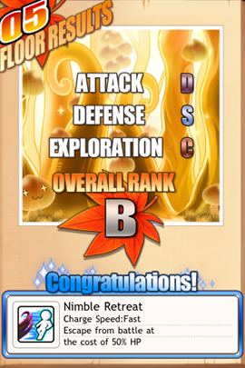
At the end of every floor, you get ranked on how you did and rewarded based on your rank.
Your Attack Rank is based on how often you attacked without missing.
▪ If you can pull off some critical hits, too, that's even better!
Your Defense Rank is based on how much damage you took on that floor.
▪ Eating food and drinking potions drop this rank.
▪ You could starve yourself to get a better grade, but don't overdo it. Getting a low rank is better than getting beat by a monster!
Finally, your Exploration Rank is based on how fast you clear the floor.
▪ But don't rush through and skip the treasure chests! Finding treasure also raises your rank here.
▪ The goal is to find as many treasure chests as you can, as quickly as you can.
6. SKILL
Now let's talk about skills!
There are two types of skills. First, we have passive skills.
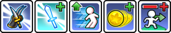
▪ Passive skills can be learned every 5 levels.
▪ Once you learn the skill, its effects are permanent, making you that much more powerful.
▪ The first levels of these skills may not seem much, but they only get more powerful the higher they get.
▪ Choose your skills to suit your style.
▪ You could master one skill, or dabble in all of them... That's the adventurer's dilemma.
On the other hand, active skills are more hands-on than passive skills.
▪ You must equip these skills before you start exploring by visiting the Tavern.
▪ You start out with just one, but later you can learn more and change things up a little.
▪ Just leveling up isn't enough to learn new skills, though. You also need to defeat powerful bosses.
▪ The first time you beat a boss monster, you'll learn a whole new active skill.
▪ Remember, if you want another character to learn a skill, then that character also has to defeat the boss themselves.
▪ Some skills can even be used while exploring, even if you're not in battle.
7. ENCHANT
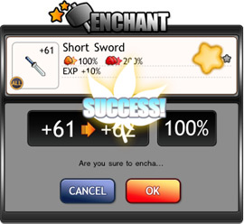
Weapons and armor can be enchanted to make them even more powerful.
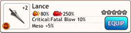
Some equipment has one or more stars next to its stats.
▪ These stars show you how much potential that equipment has.
▪ Since enchanting is the process of drawing out that potential, the number of enchantments you can try is equal to the number of stars.
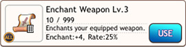
You need an Enchant Scroll in order to do so.
▪ There are all kinds of Enchant Scrolls, each one able to draw out different amounts of potential.
▪ Of course, powerful Enchant Scrolls have a lower success rate, which makes it a bit of a trade-off.
▪ Will you do a safe, weaker enchantment...or pray that you get the powerful enchantment you're going for?